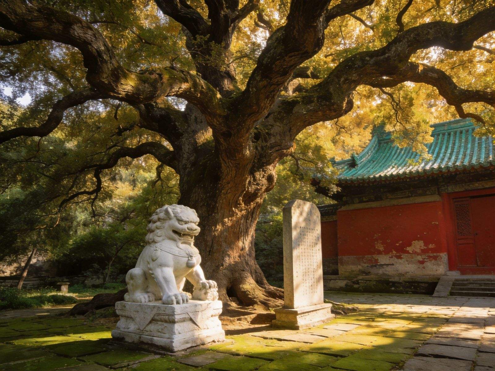

一分钟看懂先快速建立整体认知
JINCI AT A GLANCE晋祠位于太原西南晋祠镇，是为纪念周武王的弟弟唐叔虞而建的祠堂，距今逾两千年，是中国现存最早的古典园林式祠庙之一。核心看点是宋代圣母殿（木构古建）、难老泉（晋水之源）与周柏唐槐千年古木，合称"晋祠三绝"。离太原市区约 25km，半天可从容往返。
🏛 宋代圣母殿
💧 难老泉
🌳 周柏唐槐
🏞 皇家园林先声
提示：古建与古木多在露天，晴天光影最美，遇雨则可观另一番清幽。